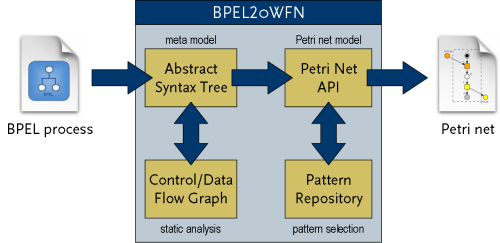

GNU BPEL2oWFN Version 2.0.0, 20 April 2007
|
|
Translating BPEL Process to Open Workflow
Nets GNU BPEL2oWFN Version 2.0.0, 20 April 2007 |
GNU BPEL2oWFN translates a web service expressed in WS-BPEL (Web Service Business Process Execution Language) into an oWFN (open Workflow Net). This oWFN can be used to:
- check for controllability or generate the operating guideline using the tool Fiona,
- check for deadlocks or any other Petri net property, or
- check any temporal logic formula with a variety of model checking tools.

GNU BPEL2oWFN uses static analysis to make the generated Petri net model as compact as possible to analyze a chosen property. This is called flexible model generation. Furthermore, several design flaws can be detected using control and data flow analysis.
GNU BPEL2oWFN was written by Niels Lohmann, Christian Gierds and Martin Znamirowski. It is part of the Tools4BPEL project funded by the Bundesministerium für Bildung und Forschung. See http://www.informatik.hu-berlin.de/top/tools4bpel for details.
Contents |
News
|